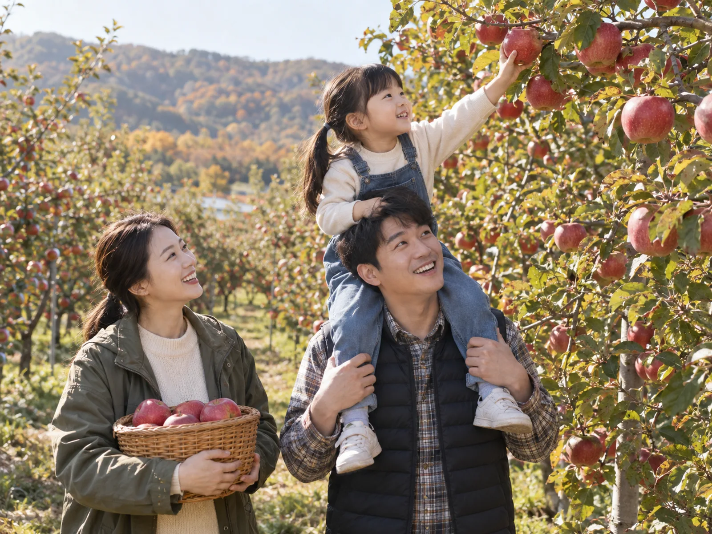
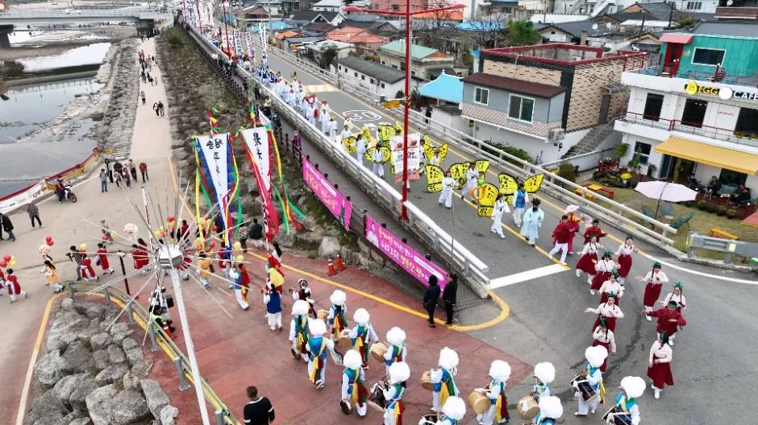
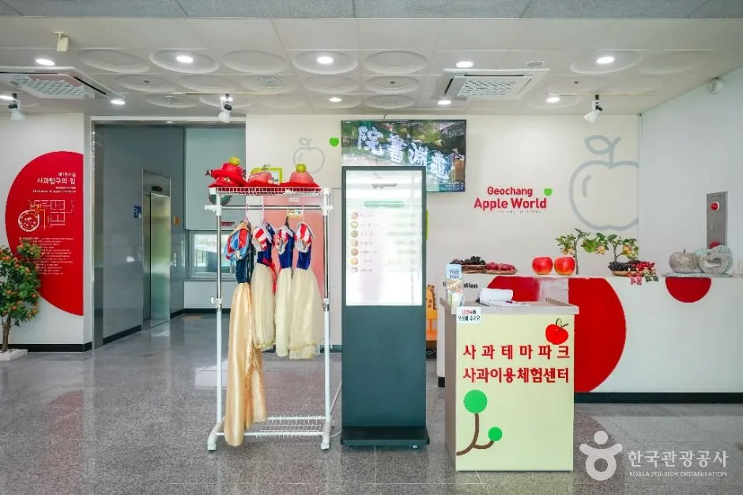
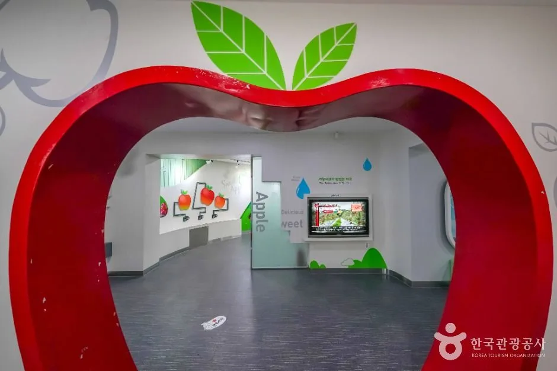
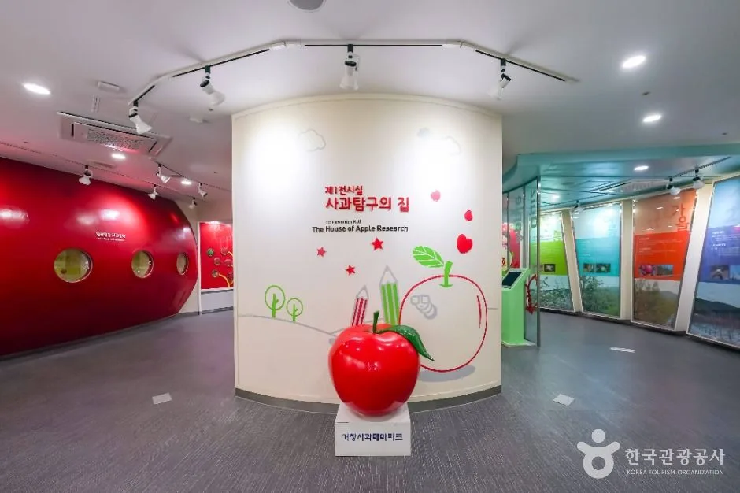
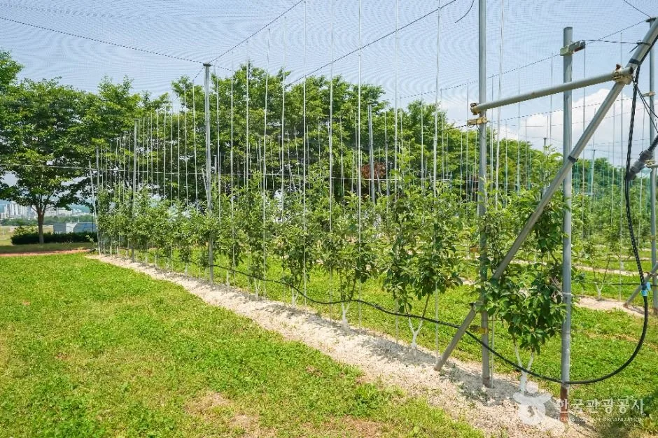
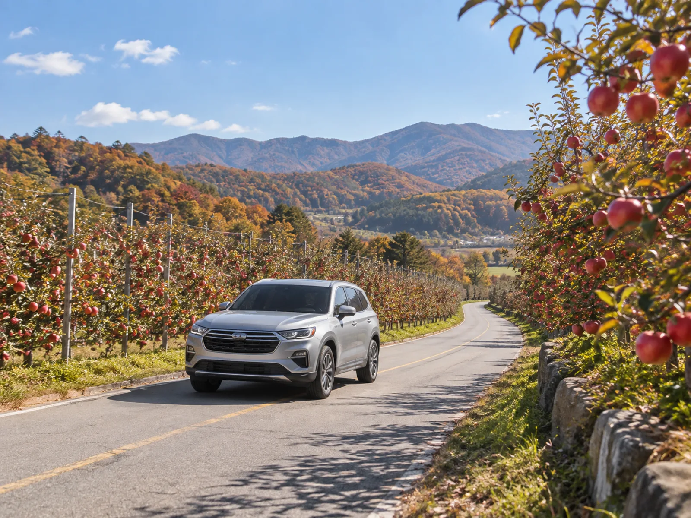
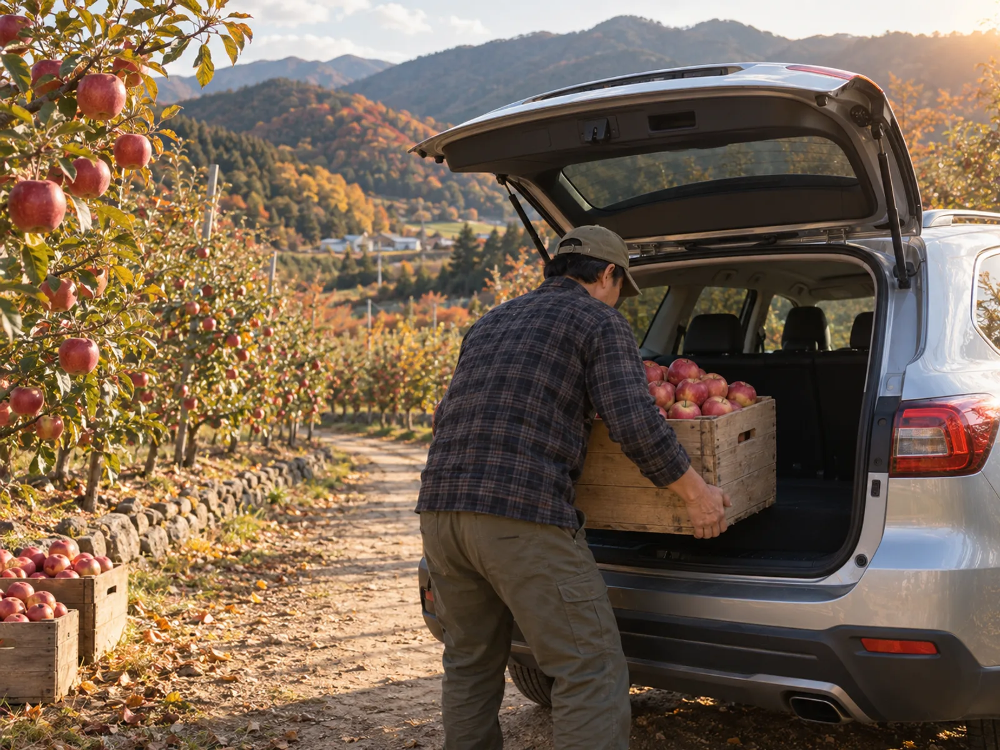

▲ 산자락 하천변에 천막 부스가 늘어선 청송사과축제 행사장 전경 ⓒ 한국관광공사
마트에서 파는 사과와 나무에서 직접 딴 사과, 맛의 차이는 실제로 있을까. 정답과 별개로, 매년 가을이면 전국 사과 산지의 체험농장에는 직접 따먹어보려는 가족 단위 방문객이 몰린다.
국산 사과 산지는 최근 기후변화로 대구·경북 중심에서 충북 충주, 경북 청송, 경남 거창 등으로 넓어지는 추세다. 이 글에서는 실제로 운영 중인 체험농장과 축제 정보를 중심으로, 자동차로 찾아가기 좋은 가을 사과 코스 세 곳을 정리했다.
1. "서울서 차로 2시간" — 충주 새터농원, 사과는 따는 만큼 산다
충주는 최근 사과 산지로 주목받는 지역이다. 일교차가 크고 일조량이 풍부한 지역 특성 덕에 당도 높은 사과가 나는 것으로 알려졌고, 전국 사과 재배면적의 상당 부분을 충북이 차지하는 가운데 충주가 그 중심에 있다.
충주시 수안보면에 있는 새터농원은 가을철 사과따기 체험을 운영하는 농장이다. 입장료는 따로 없고, 현장에서 따서 바로 먹는 사과는 무료, 집에 가져갈 사과는 kg당 4000원에 구매하는 방식이다. 친환경 재배로 껍질째 먹을 수 있다는 점도 특징이다.
| 항목 | 내용 |
|---|---|
| 위치 | 충북 충주시 수안보면 팔봉로 1225 |
| 입장료 | 없음 (사과는 kg당 4000원에 구매, 현장 시식 무료) |
| 예약 | 사전 전화 예약 필요 — 010-3432-2986 |
| 거리(서울 기준) | 자동차로 약 2시간 |

▲ 직접 딴 사과를 그 자리에서 맛보는 것도 체험농장 방문의 재미다 ⓒ CarPrism (AI 생성 이미지)
📍 충주엔 사과 체험공간이 더 있다
충주시 직동 발티마을 일대의 '사과꽃 마을'도 사과따기·사과떡 만들기 등 계절별 체험 프로그램을 운영하는 곳으로 알려졌다. 다만 프로그램별 정확한 운영 시기와 예약 방법은 마을 측에 사전 문의가 필요하다.
참고로 1997년부터 매년 10월 별도로 열리던 충주사과축제는 2015년부터 충주밤축제·천등산고구마축제 등과 함께 '충주농산물한마당축제'로 통합 개최되고 있어, 최근에는 단독 명칭의 축제보다 통합 축제 형태로 열리는 경우가 많다. 2026년 정확한 일정은 축제 임박 시 충북나드리 홈페이지에서 공지된다.
충주 지역 축제·체험 정보는 충북나드리 홈페이지에서 확인할 수 있다. 충북나드리 축제일정 바로가기
2. "지금 청송! 사과로 물들다" — 11월 초 닷새간의 사과축제
경북 청송은 대표적인 사과 산지로 꼽힌다. 청송군은 매년 가을 청송사과축제를 열어왔고, 2026년에는 11월 4일부터 8일까지 5일간 청송읍 용전천 현비암 일원에서 개최된다. 올해 주제는 '지금 청송! 사과로 물들다'다.
✅ 2026 청송사과축제 한눈에 보기
· 기간: 2026년 11월 4일(수)~8일(일), 5일간
· 장소: 경북 청송읍 용전천 현비암 일원
· 체험 프로그램: 황금사과 찾기, 사과난타, 사과선별로또, 사과 방망이 체험, 사과 티코스터 만들기 등
· 온라인 축제: 9월 24일~11월 8일 포털사이트 다음(Daum)에서 사전 온라인 축제 병행 운영
축제장뿐 아니라 청송 인근 사과 농가들도 이 시기에 맞춰 직판·체험을 여는 경우가 많다. 축제 일정에 맞춰 방문하면 사과 구매와 체험을 한 번에 해결할 수 있는 셈이다.
📍 청송 가는 길, 주왕산과 묶으면 좋다
청송읍은 주왕산국립공원과 가까워, 단풍 절정기의 주왕산·주산지 관람과 사과축제를 같은 날 동선으로 묶는 여행자가 많다. 당진영덕고속도로 청송IC를 이용하면 국도로 쉽게 연결된다.
청송사과축제 최신 소식과 프로그램 안내는 공식 홈페이지에서 확인 가능하다. 청송사과축제 공식 홈페이지 바로가기
▲ 붉은 사과 모자를 쓴 참가자들이 모여 행사를 즐기는 청송사과축제 현장 ⓒ 한국관광공사

▲ 축제 기간에는 거리 행렬과 각종 공연 프로그램이 이어진다 ⓒ 한국관광공사
3. 거창엔 사과 '체험센터'가 상설로 있다 — 축제는 10월 초
경남 거창은 사과 체험을 연중 상설 프로그램으로 운영한다는 점이 다르다. 거창군 거창읍에 있는 거창사과테마파크는 전시관은 무료 관람이고, 별도 교육장(거창군 고제면 내당길 160)에서는 사과이용체험센터가 요리 체험을 운영한다.
| 구분 | 내용 |
|---|---|
| 전시관 위치 | 경남 거창군 거창읍 거함대로 3372-60 |
| 체험센터(교육장) 위치 | 경남 거창군 고제면 내당길 160 |
| 운영시간 | 월·화, 목~일 10:00~17:00 (수요일·1월1일·설/추석 연휴 휴관) |
| 체험비 | 수제도우 피자 1만5000원, 또띠아 피자 1만3000원, 사과파이 1만5000원, 사과철판아이스크림 8000원 등 |
| 예약 | 사전 전화 예약 필요 — 체험센터 055-940-8784 |

▲ 거창사과테마파크 사과체험센터 입구. 사과 체험 프로그램은 이곳에서 예약제로 운영된다 ⓒ 한국관광공사

▲ 사과 모양 아치를 지나면 사과의 성장 과정을 소개하는 전시 공간이 이어진다 ⓒ 한국관광공사

▲ 거창사과테마파크 제1전시실 '사과탐구의 집'. 붉은 대형 사과 조형물이 입구를 지킨다ⓒ 한국관광공사

▲ 거창 사과 과수원. 가지를 철사에 유인한 재배 방식을 볼 수 있다 ⓒ 한국관광공사
거창 사과를 축제 분위기 속에서 만나고 싶다면 2026년 10월 1일부터 4일까지 거창읍 일원에서 열리는 거창한마당대축제도 눈여겨볼 만하다. 이 축제 안에는 '녹색곳간거창 농산물대축제'가 함께 열려 거창 사과·포도 품평회와 생산자 직거래 판매가 진행된다.
✅ 거창 방문 시 체크포인트
· 체험센터는 수요일·1월1일·설/추석 연휴 휴관이므로 방문 전 요일 확인 필수
· 요리체험은 사전 예약제 — 현장에서 바로 참여 가능한 종목(토르티야 피자 등)과 예약 필수 종목(수제도우 피자 등)이 나뉨
· 거창한마당대축제 기간에는 사과·포도 직거래 판매 부스가 함께 열리니 축제 일정과 겹쳐 방문하면 효율적
거창사과테마파크 체험 프로그램과 예약 방법은 거창군 공식 페이지에서 확인할 수 있다. 거창사과테마파크 공식 안내 바로가기
4. 자동차로 갈 때 알아두면 좋은 것들
세 지역 모두 체험농장이나 체험센터 자체가 대중교통으로 접근하기 쉬운 위치는 아니다. 국도변이나 면 소재지 안쪽에 있는 경우가 많아, 사실상 자가용이 현실적인 이동 수단이다.

▲ 체험농장과 축제장 대부분은 국도변에 있어 자가용 접근이 현실적이다 ⓒ CarPrism (AI 생성 이미지)
📍 방문 전 예약 확인은 필수
충주 새터농원, 거창사과테마파크 체험센터 모두 사전 전화 예약을 원칙으로 한다. 특히 주말·축제 기간에는 방문객이 몰려 예약 없이 갔다가 체험을 못 하는 경우도 있으니, 출발 전 전화로 운영 여부와 예약 가능 여부를 다시 확인하는 편이 안전하다.

▲ 사과를 많이 살 계획이라면 상자를 눕히지 않고 세워 실을 공간을 미리 확보해두는 것이 좋다 ⓒ CarPrism (AI 생성 이미지)
✅ 가을 과수원 드라이브 전 점검 리스트
· 사과를 담아올 아이스박스나 종이박스 미리 준비 — 트렁크에 눕혀 두면 이동 중 눌릴 수 있음
· 과수원 안쪽 진입로는 비포장 흙길인 경우가 많으니 우천 직후에는 노면 상태 확인
· 축제장 인근은 주차 공간이 한정적일 수 있어, 성수기 주말에는 오전 일찍 도착하는 편이 유리
· 청송·거창처럼 산간 지역은 해 지는 시간이 빨라 야간 산길 운전을 피하도록 일정을 짜는 것이 안전
5. 어디부터 가볼까 — 일정별 추천
당일치기로 가볍게 다녀오고 싶다면 충주가 가장 현실적이다. 서울에서 왕복 4시간 안팎이면 사과 체험까지 마칠 수 있다.
축제 분위기를 느끼고 싶다면 일정에 맞춰 청송이나 거창을 고르면 된다. 10월 초라면 거창한마당대축제(10월 1~4일)와 사과·포도 품평회를, 11월 초라면 청송사과축제(11월 4~8일)와 주왕산 단풍을 함께 묶는 일정이 가능하다.
6. 요약
충주 새터농원은 입장료 없이 kg당 4000원으로 사과를 직접 따서 사올 수 있는 곳이고, 서울에서 차로 약 2시간 거리다. 청송사과축제는 2026년 11월 4~8일 청송읍 용전천 일원에서 열리며, 거창사과테마파크는 상설 체험센터(수요일 휴관)를 운영하고 거창한마당대축제는 10월 1~4일 사과·포도 품평회와 함께 열린다.
세 곳 모두 대중교통보다 자가용 접근이 현실적이며, 방문 전 전화 예약과 운영 요일 확인이 필요하다. 사과를 담아올 상자, 비포장 진입로 대비, 이른 도착 등을 챙기면 가을 사과 드라이브를 더 여유롭게 즐길 수 있다.